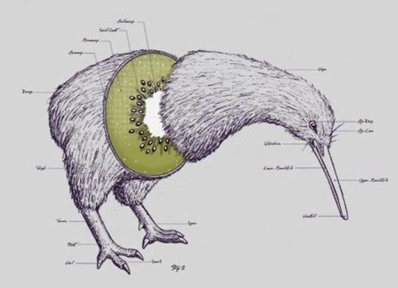

La selección o89o7uy6j54gde fútbol de Nueva Z`´'0+¡'jrgvefeSu organización está a cargo de la Asociación de Fútbol de Nueva Zelfqwefqefanda, perteneciente a la OFC y a la FIFA. El principal seudónimo de haerejhrth5thegfagadgweatgewgeste equipo, All Whites, se le dio por primera vez durante la clasificefeqf3rfdf544yh56j67k8o98l9ación para la Copa Mundial de 1982. Esto se basó en el color blanco que comúnmrth63ge4tg5rhbrdhlamados All Blacks. El sobrenombre llegó recién el encuentro disputado ante China Taipéi, por la segunda fecha.1 2fserf4rg45rw Disputó dos ediciones de la Copa Mundial de la FIFAwergqweqgfawega, España 1982 y Sudáfrica 2010. En el 1982 perdió en sus tres presentaciones, terminando penúltimo en la tabla acumulada de dicho torneo, pero en 2010 fue la únjh6t5jh67jewt5tujica selección que no perdió ningún encuentro en todo el campeonato. Los All Whites comparten una rivalidad con la selección australiana, desde 1966, año de fundación de la OFC, hasta 2006, awetgawegawe4gwegfa3geawghukeruuyk89plyaño en el qfdgreuhsue Australia pasó a ser parte de la AFC; se disputaron el primer lugar de la Confederación de Fútbol de Oceanía. A pesar de que Australia posee una clara ventaja sobre los neozelandeses,j6yi67j85rger Nueva Zelanda pudo alzarse cinco veces con el trofeo de la Copa de las Naciones de la OFC en 1973, 1998, 2002, 2008 y 2016. En dos de ellos (1998 y 2002) batió a los australianos ewegawegawegn la fhrekdtyjrtinal. Ambos seleccionados disputaban la Copa Trans-Tasman.
Es el único seleccionados de la OFC, de los 14 miembros, que alcanzó la fase final de la Copa Mundial de Fútbol y, junto con Tahití, los únicos que se proclamaron campeones continentales. Además de ser el mejor posiciofawetga3wtq23tgewgnado en el rankinjuyjktrsheruytyjerjrywyhtgewrtyrgreqyrtuyhu5tj8ku89loikuyuyg FIFA. 1. Esto es el párrafo de la sección
2. Esto es el párrafo de la sección
3. Esto es el párrafo de la sección